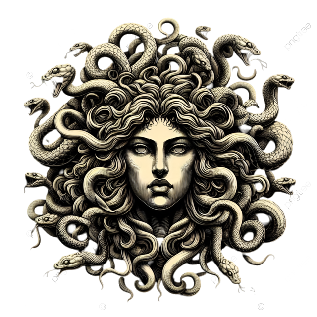

Arquivo mitológico
Encontre seu próximo mito.
Explore o índice completo e abra a página de cada personagem. Os links levam diretamente às histórias, sem scripts ou JavaScript.

Índice de personagens
Selecione um dos nomes abaixo para consultar sua página.
Nota sobre a pesquisa: para manter o projeto exclusivamente em HTML e CSS, este índice oferece navegação direta por nomes. Uma caixa que filtre automaticamente os resultados conforme o texto digitado exige JavaScript ou processamento no servidor; por isso, a navegação foi organizada como um índice clicável e acessível.